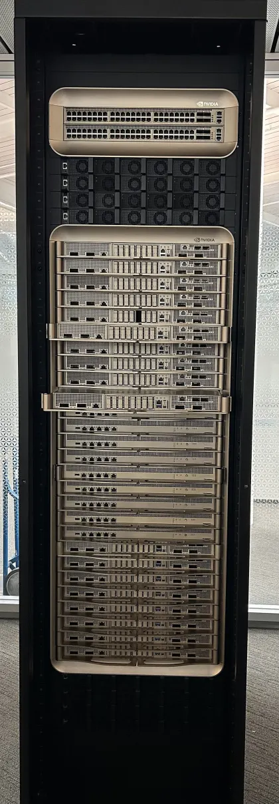
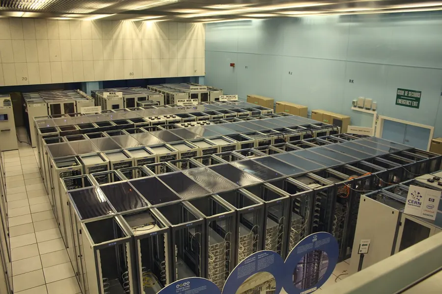
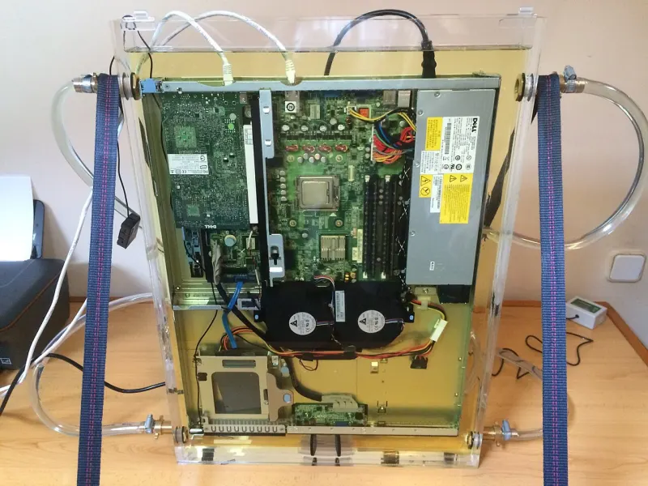

Every watt a chip draws has to be delivered and then carried away as heat, and tens of thousands of chips running one job in lockstep multiply all of it: the power a site must connect, the swing of its load every step, and how often some part breaks and stops the job.
From the grid to the chip and back out as heat, then multiplied by lockstep
Top row: a 1 GW site at PUE 1.2 loses about 167 MW to cooling and power conversion before the 833 MW that reaches servers derived; a GB200 NVL72 rack draws about 120 kW on a 54 V busbar; each Blackwell GPU up to 1,200 W vendor. Middle row: every one of those watts leaves as heat, through a cold plate on the chip, a coolant distribution unit and the building's water loop. Bottom row: Llama 3's 16,384 GPUs swung the site by tens of megawatts and stopped once every 3.1 hours published. Labels: vendor a manufacturer's figure, published a paper or operator, derived computed here (formula shown), illustrative chosen for teaching; sources are in each section.
Chips draw 700 to 1,400 W each and keep rising. A gigawatt of facility power holds roughly half a million Blackwell GPUs (section 2).
A 120 kW rack would need about 14,000 cubic feet of air a minute; water carries the same heat in about 170 litres a minute (section 3).
Compute near full power, all-reduce near idle: the whole site swings by tens of megawatts each step (section 4).
Llama 3 405B stopped 419 times in 54 days on 16,384 GPUs; at the same rate 100,000 GPUs stop every 30 minutes (section 5).
The best interval is about √(2 × checkpoint cost × MTBF); get it wrong and a day of training loses hours (section 6).
A defective core can return wrong numbers with no error. At Gemini's scale Google expected one such event every week or two (section 7).
What a watt does inside a chip. Each transistor switch charges or drains a tiny capacitance, so switching power is roughly activity × capacitance × voltage² × frequency, plus leakage that flows even when nothing switches (processor power dissipation). Higher clocks need higher voltage, so the last few hundred megahertz cost far more power than the first. Moving data costs more than computing on it: reading 32 bits from DRAM costs about 640 pJ against 3.7 pJ for a float multiply in Horowitz's 45 nm figures (Han et al. 2015, Fig. 1), which is why Memory technology spends a section on energy per bit.
The ceiling. NVIDIA quotes "up to 700 W" for H100 SXM (H100); AMD quotes total board power, 750 W for MI300X (data sheet). Firmware enforces it continuously with DVFS, and you can set a lower cap yourself (nvidia-smi -pl <watts>). Meta saw DVFS in a real run: Llama 3 405B's throughput varied by 1 to 2% with the time of day, because higher mid-day temperatures changed the GPUs' clocks (Llama 3 §3.3.4) published.
Each generation draws more power and does much more work per joule. Toggle the chart: watts climb from 280 W to 2,500 W while picojoules per dense BF16 FLOP at peak (a ceiling, not what a run achieves) fall more than tenfold.
pJ/FLOP derived = max power (W) / dense BF16 peak (FLOP/s) × 1012. A100, H100 (NVIDIA product pages); Blackwell 1,200 W and Blackwell Ultra 1,400 W (NVIDIA, Aug 22 2025) with 2,500 TFLOPS dense BF16 per GPU (GB200 NVL72); MI300X and MI355X (AMD data sheets); MI455X announced 2,500 W max TBP and 5 PF BF16 (AMD does not say dense); TPU v2 and v3 TDP and TPU v4 measured maximum (Jouppi et al. 2020, TPU v4 paper). Every figure is in the Chip atlas tab of the parent page.
Server. An 8-GPU DGX H100 is rated 10.2 kW maximum, fed by six 3.3 kW power supplies in 4+2 redundancy (DGX H100 user guide) vendor. Eight GPUs at 700 W are 5.6 kW, about 55% of it derived; the rest is two CPUs, memory, NVSwitches, network cards, storage and fans. So "GPU watts" understate what a GPU costs a data centre by nearly a factor of two. A DGX B200 is about 14.3 kW (DGX B200).
Rack. A GB200 NVL72 rack (72 GPUs, 36 Grace CPUs) draws "approximately 120 kW"; eight power shelves, each with six 5.5 kW supplies and 33 kW of input, give N+N redundancy (DGX GB200 user guide) vendor. Four DGX H100s in one rack would already be 40.8 kW derived.
Delivery (the hero's top row). Grid power at high voltage is stepped down at the site's substation, passes switchgear and uninterruptible power supplies (UPS: batteries that bridge short outages), reaches the rack's power shelves, which convert it to 54 V DC on a copper busbar, and is converted again on each board to the silicon's voltage. Every conversion loses a few percent as heat.

Why 54 V runs out. Current is power divided by voltage, so a 1 MW rack at 54 V would need 18,519 A derived: NVIDIA writes that this "requires up to 200 kg of copper busbar" per rack, and plans 800 V DC distribution (1,250 A for the same megawatt) with "up to 5% improvement in end-to-end power efficiency", "starting in 2027" with its Kyber racks; it puts today's 54 V racks at up to 200 kW (NVIDIA, May 20 2025) vendor.
Google's fleet ran at a trailing-twelve-month PUE of 1.09 in 2025; the Uptime Institute's 2025 survey average was 1.54 (Google) published: 54 watts of overhead for every 100 that compute, against 9. Sites are now planned in megawatts of grid connection, so "how many accelerators?" is the division above. Predict how many B200s a gigawatt holds at PUE 1.2, then move the site power and PUE.
Systems at the vendor's maximum vendor: DGX H100 10.2 kW, DGX B200 about 14.3 kW, DGX B300 about 14 kW, GB200 NVL72 about 120 kW, Ironwood pod "spanning nearly 10 MW" for 9,216 chips (Google, Apr 2025; whether that includes cooling is not stated unconfirmed). Peaks are dense BF16 per accelerator (H100 989.5, HGX B200 and B300 2,250, GB200 2,500, TPU7x 2,307 TFLOPS). Rents on demand, fetched 2026-10-05: Lambda H100 $3.99 and B200 $6.69 per GPU-hour, Google Cloud Ironwood $12.00 per chip-hour. Price: US industrial average, July 2026, 9.77 cents per kWh (EIA, released Sep 24 2026). Average draw changes only energy and cost: the site is still sized for the maximum. Site power slider is log scale, 1 MW to 5 GW. Everything else derived; the DGX B200 row reproduces the parent page's "about 466,000" per gigawatt by construction. Real sites provision below nameplate and add switches and storage: an order of magnitude, not a plan.
Power is cheap per hour and scarce per site. A DGX H100's share per GPU at PUE 1.2 is 1.53 kW; at 9.77 cents per kWh that is about $0.15 per GPU-hour, 3.7% of Lambda's on-demand $3.99 for an H100 derived. A gigawatt for a year is 8.77 TWh, about $0.86 billion at that price. Electricity is a small line in a GPU-hour; the binding constraint is how many megawatts a site can get connected, which is why recent hardware comparisons are quoted in tokens per megawatt (section 8 of the parent page). Costing a whole run is on Performance math.
Every watt a rack draws becomes a watt of heat inside it; if it is not carried away as fast as it is made, chips throttle (section 1) and then shut down. How much coolant that takes is one line of physics:
Per litre, water carries about 3,464 times as much heat as air for the same temperature rise (standard properties near 20 °C: air 1.2 kg/m³, water 998 kg/m³) derived. That ratio is the whole argument. It checks on a real server: a DGX H100 at 10.2 kW with its rated 1,105 cubic feet per minute (CFM) of airflow at 80% fan speed (user guide) would warm that air by 16.2 °C derived, a sensible design rise. Predict the airflow a 120 kW rack needs, then try the presets.
Same heat, two coolants derived: air flow = Q / (1.2 × 1,005 × ΔT) m³/s; water flow = Q / (4,186 × ΔT) kg/s. At the defaults a 120 kW rack needs about 6.6 m³/s of air (14,000 CFM) or about 170 L/min of water. Real racks also hit limits this ignores: fan power grows steeply with airflow, and a rack's front face is only so large.
Three ways to carry the heat. Air: fans push room air through the servers, and the hall separates cold intake aisles from hot exhaust. Direct-to-chip liquid, the common choice for dense AI racks: in a GB200 NVL72, cold plates sit on the CPUs and GPUs of every compute tray and liquid runs through them, while "the rest of the components like networking and storage devices are air cooled" (DGX GB200 user guide); the warm liquid goes to a coolant distribution unit that passes the heat to the building's water loop. Google moved its TPUs to liquid at v3 in 2018 (Jouppi et al. 2020), and Ironwood pods are liquid cooled. Immersion: whole servers sit in a dielectric fluid. In Microsoft's two-phase version the fluid is "engineered to boil at 122 degrees Fahrenheit" (50 °C), the vapour condenses on a cooled lid and rains back, and the company reported it "reduced power consumption for any given server by 5% to 15%" (Microsoft, Apr 6 2021) vendor.


Water. Many sites reject heat by evaporating water in cooling towers, so cooling has a water cost too: Google counts 0.26 mL for the median Gemini Apps text prompt, data-centre water consumption included (Google Cloud, Aug 21 2025) published.
In synchronous data-parallel training every GPU computes its part of a step, then all wait for the gradient all-reduce, then all start the next step together. Computing draws close to full power; communicating draws close to idle. One GPU swinging by a few hundred watts is nothing; sixteen thousand at the same instant is a load the grid can see. Meta reported exactly that on Llama 3: "tens of thousands of GPUs may increase or decrease power consumption at the same time", for instance all waiting for a checkpoint or a collective, giving "instant fluctuations of power consumption across the data center on the order of tens of megawatts, stretching the limits of the power grid" (Llama 3 §3.3.4) published. The order of magnitude checks: 16,384 H100s at 700 W are 11.5 MW of GPU power alone, and 2,048 servers at a DGX H100's 10.2 kW maximum would be 20.9 MW derived.
A 57-author team led by Microsoft measured swings of "tens or hundreds of megawatts" within one data centre, concentrated around 0.2 to 3 Hz, a range that can resonate with parts of the grid's own equipment and damage it (Choukse et al., arXiv 2508.14318, Aug 2025) published. Utilities therefore limit how fast a site may ramp, in megawatts per second. Step through six training steps, then switch on the fix and step again.
An illustrative trace illustrative: 16,384 GPUs at 1,200 W, steps of 6 s compute and 2 s all-reduce at 15% of full power, one 12 s checkpoint pause after the third step; the grey line is the other mode. Only the 90% floor and the idea of ramp limits come from the paper; step times, idle level and ramp rate are chosen for teaching (recomputed in src/recompute.py).
Three fixes, each with a cost (from that paper and NVIDIA):
For you: a power floor or filler work means paying for energy that trains nothing, and a cluster under a site power cap may run its GPUs below rated clocks. Both show up as lower MFU for reasons no profiler of your code will find.
Synchronous training needs every GPU in the job: if one dies, the collective it was part of never completes and the whole job stops. So the job fails whenever any part fails, and with N parts that is N times as often as one part.
Double the GPUs, halve the time between stops
Job MTBF against GPUs, both axes log derived, at three published failure rates. Llama 3's 419 unexpected interruptions in 54 days on 2,048 servers is 3.79 failures per thousand server-days: one 8-GPU server fails about once every 264 days, one GPU-share about every 5.8 years, yet the 16,384-GPU job stops once every 3.1 hours, and at the same rate 100,000 GPUs stop every 30 minutes. Meta's research clusters measured 6.50 and 2.34 per thousand node-days, which project to 1.8 hours for 16,384 GPUs and 0.23 hours for 131,072 (Kokolis et al., Feb 2025; reproduced here) published. The dashed line is 20 minutes, a 5-minute checkpoint plus 15 minutes to recover: where MTBF approaches it, section 6's first-order formula breaks. Google's Gemini report says the same in words: more accelerators "results in a proportionate decrease in the mean time between failure" (Gemini report).
What actually fails. Meta's Llama 3 405B pre-training is the best public record: in a 54-day snapshot on up to 16,384 H100s there were 466 interruptions, 47 planned and 419 unexpected, about 78% of them confirmed or suspected hardware; only three needed significant manual intervention, and the run kept more than 90% effective training time (Llama 3 §3.3.4, Table 5) published. Table 5, coloured by where in the hardware each cause sits:
The GPU itself (die, HBM, on-chip SRAM, its management processor, thermal interface and sensors) caused 64.0% of stops, 268 of 419 by count derived. Memory on the GPU alone, HBM3 plus SRAM, caused 91, 21.7%. Yet each GPU is very reliable: 72 HBM interruptions over 16,384 GPUs for 54 days is one per 33.6 GPU-years derived. Nothing here is a bad part; it is the multiplication. Fault tolerance at scale reads eleven published failure tables against this one.
How the hardware reports a fault, from a single flipped bit to a replaced GPU:
A checkpoint saves model and optimiser state so a failed job restarts from it. Checkpointing often wastes time writing; checkpointing rarely wastes the work done since the last save at every failure. The best interval in between follows from four numbers:
The first term is time spent checkpointing; the second is failures, one every μ hours, each costing the downtime, the recovery and on average half a period of lost work, because a failure is equally likely anywhere in the period. Minimising over T gives Young's interval (Young 1974) and Daly's, which adds recovery (Daly 2006; both as eq. 12 and 13 of Aupy et al. 2013). The square root is the intuition: double the failure rate and the best interval shrinks only by √2. For Llama 3's rate (μ = 3.09 h) and a 5-minute synchronous checkpoint, Young gives 48.1 minutes; with 10 minutes of downtime and 5 of recovery the exact optimum is 44.8 minutes and the job keeps 72.5% of its time derived. A 3-hour interval on the same run keeps 53.2%.
Watch it. One day of that job: the same random failures hit two copies, one checkpointing every 3 hours and one at Young's interval. Predict how much more training the Young lane keeps by evening, then step through the day; change the job size, the pause or your interval below.
The curve is flat near the optimum and falls steeply at long intervals
The exact answer. If failures arrive at random (a Poisson process), the expected time is known exactly: Timefinal = (μ + D) eR/μ (eT/μ − 1) Timebase / (T − C) (quoted by Aupy et al. from earlier work). The curve above uses it; the first-order line falls below it as the interval grows and can go negative at large scale.
Useful fraction of wall-clock time at the exact optimum, Llama 3's failure rate, D = 10 min, R = 5 min illustrative, against the first-order formula's prediction at Young's interval derived. Real systems at these scales cut D and R too (hot spares, in-memory checkpoints): Fault tolerance at scale, section 5, and its Recovery designs tab, which puts each design on one clock. The Llama 3 paper page replays the 54 days of Table 5.
src/recompute.py; the largest gaps are on the two smallest platforms, where the paper fixed a two-hour job).Everything in section 5 announces itself: a crash, an Xid, a timeout. A silent data corruption is a wrong answer with no error. ECC protects bits sitting in memory, not the arithmetic units that compute on them, so a marginal transistor in a multiplier can return a wrong product and nothing notices.
What one flipped bit does to a data-parallel run, and which detector catches it (a corrupted gradient is averaged into every replica; a corrupted weight is caught by comparing replicas), is measured on Fault tolerance at scale, section 7. Treat an unexplained loss spike as a possible hardware event, not only an optimiser problem.
Everything above reduces to one number comparable across systems: J per token = system power (W) / tokens per second. Where you draw the boundary changes the answer by more than two times.
Llama 3.1 405B, joules per training token, widening the boundary
All derived. Llama 3.1 405B used 30.84 million H100 GPU-hours (model card) on 15.6 trillion tokens (Llama 3 paper): at the 700 W board limit at most 21.6 GWh of GPU energy and 4.98 J per training token. One token costs 2.43 × 1015 FLOPs; at 0.71 pJ per BF16 FLOP that is 1.72 J at 100% of peak and 4.19 J at 41% MFU. The GPU-hour figure sits about a fifth above the MFU figure, as it should: it includes restarts, evaluation and slower phases. A DGX H100 is 1.82 times its GPUs' power; with PUE 1.2 the facility spends roughly 10.9 J per training token, an upper bound because GPUs rarely sit at their limit.
Inference. Google measured the median Gemini Apps text prompt at 0.24 Wh (864 J), counting idle provisioned machines, host CPU and memory, and data-centre overhead; counting only the active accelerators gives 0.10 Wh; and the median prompt's energy fell 33 times over twelve months (Google Cloud, Aug 21 2025) published. The boundary moves the answer by more than two times, and software (batching, quantisation, better kernels) moves energy per token faster than hardware. Tokens per second for a chip and model come from the parent page's Performance calculator and Performance math.
The map of the topic. Section 7's scale ladder and section 8's short view of power and reliability are the intuition for this page; the Chip atlas lists every chip's power. 28 min, plus 3
FLOPs, memory, MFU, tokens per second and the full cost of a run: the other half of the per-gigawatt view. 21 min, plus 11
The SMs and tensor cores that turn these watts into FLOPs. 29 min, plus 8
Why moving a byte costs more energy than computing on it; HBM, the most frequent failing memory in Table 5. 23 min, plus 8
Systolic arrays and pods, and the other vendors' bets on performance per watt. 32 min, plus 7
The network whose links and switches are the second most common hardware failure in a large job. 30 min, plus 13
The software side of failures: eleven published failure tables checked, detection by layer, recovery designs from requeue to hot spares, asynchronous and in-memory checkpoints and replica groups, one bit of silent corruption measured, stragglers, goodput accounting. 40 min
Its Machinery section, "Running the job": the stack of a big run bottom to top, the 2026 training frameworks and a checklist, pointing here for the checkpoint interval. 22 min, plus 22
The paper behind Table 5 and the power swings; its "Run the 16K-GPU job" tab replays the 54 days. 26 min
Why every GPU waits for every other: the synchronous parallelism behind both the power swings and the failure arithmetic. 27 min, plus 5
The driver that reports the Xid errors and resets a GPU after a row remap. reading time on that page
Energy per token and tokens per megawatt from the serving side. 28 min, plus 3
The cluster, the storage, Table 5's 419 interruptions, the diurnal throughput dip and the power swings (Meta, Jul 2024). 20 min
Failure rates per node-day on two Meta clusters, lemon nodes, and the ETTR formula (v2, Feb 2025). 45 min
The power-swing problem and its software, GPU and storage fixes, measured (Aug 2025). 45 min
Power caps, burners and capacitors in the rack; why 54 V runs out at a megawatt (Jul and May 2025). 10 + 10 min
Section 3 is the clearest derivation of Young's and Daly's intervals and their limits; Table 2 is reproduced in section 6 of this page. 30 min for section 3
Meta's and Google's accounts of defective cores that compute wrong answers silently (2021). 30 + 25 min
Energy, water and emissions per Gemini prompt, and why the measurement boundary matters (Aug 2025). 10 min
Data-centre electricity worldwide, today and projected (2025). 20 min
Power, network topology and reliability of a large cluster, from an industry analyst (partly paywalled, not checked here). 45 min
What the driver reports and how row remapping and error containment work. 20 min